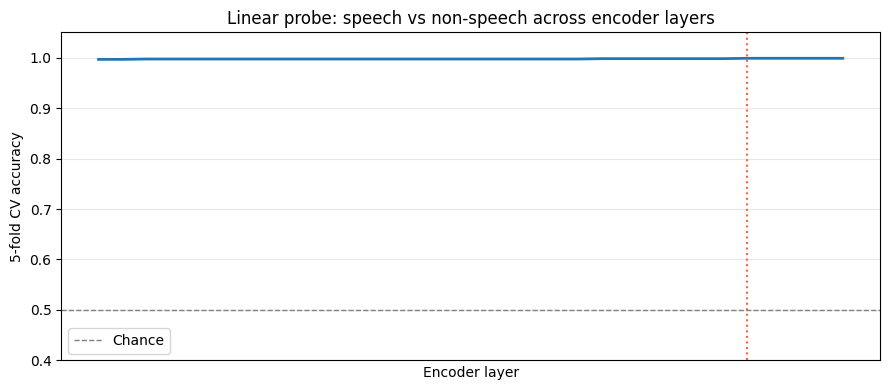
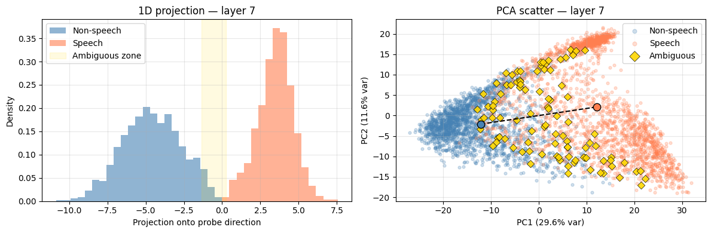

Where Do AED Hallucinations Come From?
It is a well-known fact that encoder-decoder (AED) models for speech-to-text (STT) transcription are prone to hallucinations [1]. These hallucinations are primarily present in audio segments containing sparse speech — long pauses filled with silence or ambient noise — or segments containing no speech at all.
Some authors have previously attempted to tackle these hallucinations with post-processing [2], training data selection [3], test-time data filtering [4], and fine-tuning with specific non-speech datasets [5]. In my own work, I have applied these and other techniques to suppress hallucinations in AED models, with good success.
Some residual hallucinations remain despite this careful, multi-pronged treatment, and they still manifest on audio that, to a human ear, is relatively unambiguous. This is surprising, given that the model is able to transcribe challenging audio accurately across dozens of languages — it feels counterintuitive that a much simpler task, deciding on the mere presence of speech in a given segment, should be problematic. Motivated by this, and as an excuse to develop skills relevant to interpretability work, I decided to look more closely at the model internals to understand the origin of hallucinations.
The specific question I am looking to answer is: does the model internally represent the difference between speech and non-speech, and simply not surface it in its output? Or is the speech/non-speech distinction simply absent?
There are two possible cases:
- Case A: a latent
is_speechrepresentation exists in the encoder activations, but has no causal path to the output — the decoder ignores it. The information is there; the model just doesn’t report it. - Case B: no such representation exists. The encoder processes all audio through the same features regardless of content.
A standard performance evaluation — word error rate, or WER — collapses both cases to the same observable, so we need to look inside the model.
Method
Linear probing
The main approach revolves around the linear representation hypothesis: if the speech/non-speech concept is linearly encoded in the residual stream, a logistic regression trained on mean-pooled layer activations should be able to separate the two classes. We train one probe per encoder layer and track accuracy with depth — this tells us where (if anywhere) the distinction emerges, and how strongly it is encoded.
More concretely: at each encoder layer, every example produces a vector in \(\mathbb{R}^d\) (here, \(d = 1792\) for the deep encoder stage). A direction in this space is a unit vector along which the two classes tend to sit on opposite sides of a hyperplane. Logistic regression finds this hyperplane; its weight vector \(\mathbf{w}\) is the direction. If such a direction exists, projecting any activation onto it produces a scalar that we can interpret as “how much of the speech concept is present at this layer”.
A flat curve near chance accuracy at all layers would be evidence for Case B — no latent representation. A curve that rises early would indicate the distinction is grounded in low-level acoustic features rather than semantic abstraction.
Activation collection
We register a forward hook on each transformer layer in the encoder. The hook captures the residual stream output (shape [batch, seq_len, d]) and mean-pools over the time dimension, giving one vector per example per layer:
def make_hook(layer_idx):
def hook(module, input, output):
x = output[0] # (batch, seq_len, hidden_dim)
layer_buffer[layer_idx] = x.float().mean(dim=1).detach().cpu()
return hook
handles = [layer.register_forward_hook(make_hook(i))
for i, layer in enumerate(head.encoder.layers)]Note that TransformerBlock.forward returns a tuple (residual_stream, kv_state) — hence output[0]. Mean-pooling over time is a reasonable first choice: the speech/non-speech distinction should be distributed across the whole segment, not concentrated in a single frame. We run the encoder, but not the decoder — we are interested in what the encoder has built up, independent of how the decoder interprets it.
Data
We use 1,500 examples per class:
- Non-speech: pure silence segments extracted by a force aligner, drawn from the non-speech training corpus. These are relatively unambiguous, by design — we want to probe the clean case first.
- Speech: held-out validation examples from the main English training corpus, unseen during training.
The non-speech category also includes a deliberate tail of less clear-cut examples — cheering crowds, faint radio transmissions, background chatter — surfaced through the ambiguous zone analysis described below. These are included to probe how smoothly the hypothetical latent is distributed, rather than whether it exists at all.
Probing
For each layer, logistic regression is trained and the fitted weight vector \(\mathbf{w}\) for the best-performing layer is retained for visualisation.
Results
The probe
The accuracy curve is flat, essentially at 1.000, from the first layer onwards.

Across all layers, probe accuracy is 0.999–1.000. There is no warm-up period, no layer at which the distinction first “emerges” — it is there from layer 0 and stays there. The best layer achieves 1.000 ± 0.001; the worst layer achieves 0.999 ± 0.001. The model encodes the speech/non-speech distinction essentially perfectly, from the very first transformer layer.
The 1D projection confirms it visually: the two distributions are completely separated, with essentially no overlap. The ambiguous zone (shaded gold) sits in the gap — examples that genuinely straddle the boundary: crowd noise, intelligible background conversations, shouts and yells, lyrics within background music. On audio inspection, these are exactly the cases one would expect to be ambiguous.

The PCA scatter underlines this: PC1 alone accounts for 42% of the variance at this layer, and the two classes sit cleanly at opposite ends of it. It is also worth noting that the distribution along the probe direction is smooth — a continuous gradation from confidently non-speech to confidently speech-like rather than a hard split. This is circumstantial but suggestive evidence that the direction genuinely encodes speech-likeness, rather than some other quantity that merely correlates with the class label.
Interpretation
The probe results strongly suggest Case A: the encoder builds a near-perfect linear representation of the speech/non-speech distinction from the very first layer, grounded in low-level acoustic features. This representation does not change materially as it propagates through the encoder stack. The model unambiguously “knows” it is looking at non-speech.
This has an interesting implication for the data-side fix applied earlier. Adding non-speech training data reduced hallucinations substantially — but these probe results suggest it may have worked by changing how the decoder was trained to respond to non-speech encoder representations, rather than by teaching the encoder to build the distinction in the first place. The encoder’s representation was already there; it was essentially acoustic from the outset. The fix, in effect, created a causal path from an existing representation to the correct output.
Several questions remain that the probe alone cannot answer. First: why are some segments — which are to a human ear quite clearly non-speech, and which presumably sit well within the non-speech cluster — still hallucinated on? Are they, despite appearances, not as separated from the speech cluster as they seem? Or is their position in activation space not the operative factor at all?
This leads naturally to the intervention question. If we were to take segments that sit in or near the ambiguous zone and push their activations further toward the non-speech end of the direction, would hallucinations be suppressed? And if so, is that because the direction is causally upstream of the decoder — or merely because the perturbation happens to corrupt whatever features the decoder was actually relying on? Establishing causality requires more than a correlation between probe position and output; it requires showing that deliberately moving activations along the direction produces a predictable, directional change in output.
The flip side is equally important: what is the effect of this intervention on genuinely speech-like segments? If the intervention suppresses output indiscriminately — reducing word count even on real speech — then it is not a viable approach, however effective it might be at reducing hallucinations. Both questions are the subject of the next article.
References
- A. Koenecke, A. S. G. Choi, K. X. Mei, H. Schellmann, and M. Sloane, “Careless Whisper: Speech-to-Text Hallucination Harms”
- M. Baranski, J. Jasinski, J. Bartolewska, S. Kacprzak, M. Witkowski, K. Kowalczyk, “Investigation of Whisper ASR Hallucinations Induced by Non-Speech Audio”
- S. Gandhi, P. von Platen, and A. M. Rush, “Distil-Whisper: Robust Knowledge Distillation via Large-Scale Pseudo Labelling”
- M. Bain, J. Huh, T. Han, and A. Zisserman, “WhisperX: Time-Accurate Speech Transcription of Long-Form Audio”
- Y. Wang, A. Alhmoud, S. Alsahly, M. Alqurishi, M. Ravanelli, “Calm-Whisper: Reduce Whisper Hallucination On Non-Speech By Calming Crazy Heads Down”